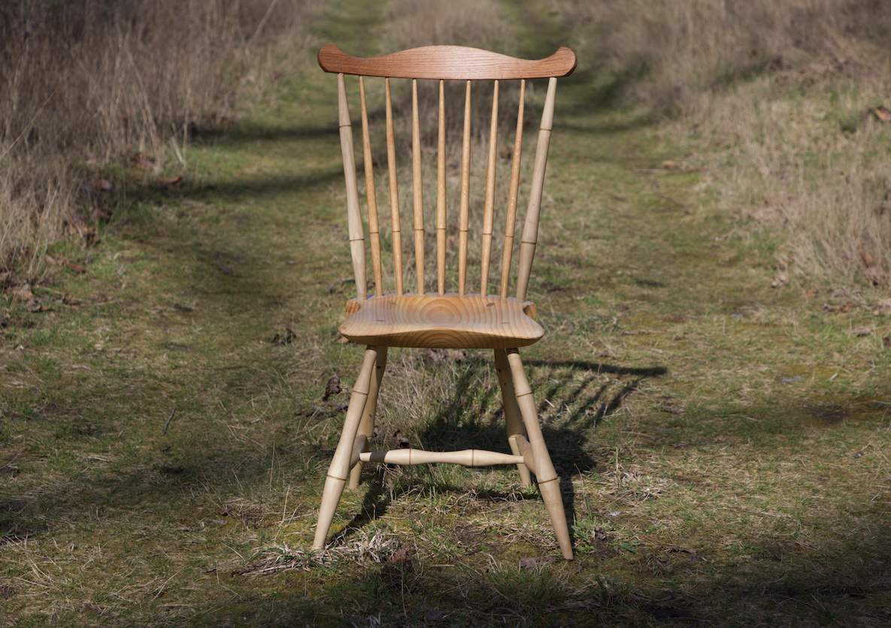
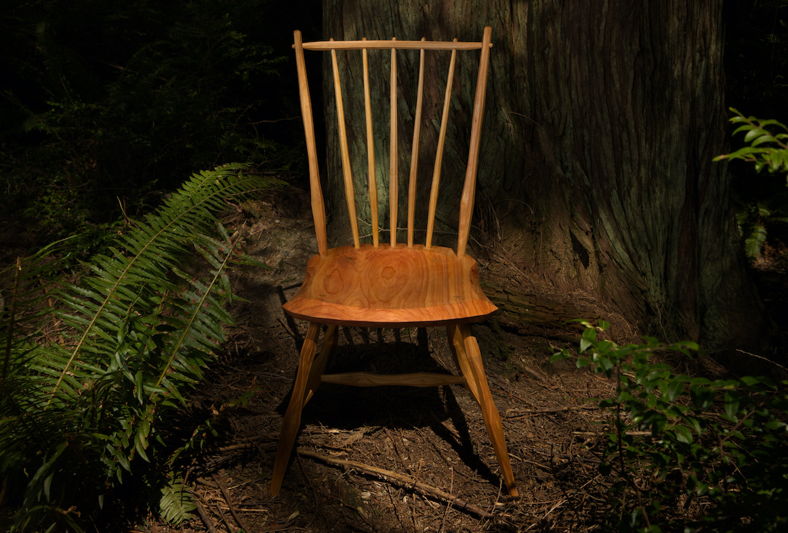
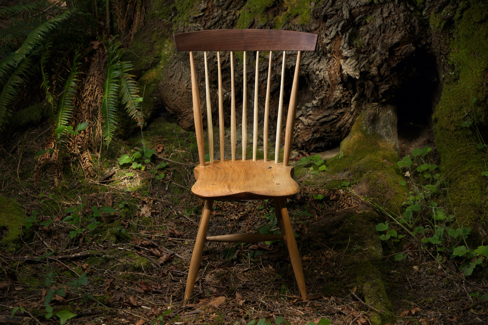

Chair Portfolio
-  A chair following Curtis Buchanon's fanback chair plans. The legs and stiles are turned from holly I harvested, which went from log to kiln in the same day to prevent blue stain. The holly turned beautifully, but warped incredibly. The crest is from an offcut of my workbench which comes from a 6x12 oak beam used for millitary dunnage.
-  This chair follows Curtis Buchanon's plans for the democratic chair, but with all local woods. The seat is western red cedar and the spindles are all pacific cherry.
-  An original design, adapted from several chairs I've made in the past. The seat, legs, and posts are from big leaf maple, the spindles are ash, and the crest is bent from air dried black walnut.